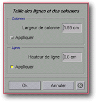

<!-- Documentation XQuad (c)1995-2000 AXENE contact axene@axene.org>
<html>

<head>
<title>Taille des lignes et des colonnes</title>
</head>

<body BGCOLOR="#FFFFFF" BACKGROUND="Images/back.gif" TEXT="#000000">

<p ALIGN="right">  </p>

<p><br>
<br>
La boîte de dialogue 'Taille des lignes et des colonnes' permet de choisir une nouvelle
taille pour les lignes et/ou les colonnes de la région de cellules sélectionnée. <br>
<br>
</p>

<hr>

<p><br>
</p>

<p align="center"> <br>
<small><i>Photo d'écran : Boîte 'Taille des lignes et des colonnes'. </i></small></p>

<p><br>
</p>

<hr>

<p><br>
</p>

<h3>Partie supérieure de la boîte de dialogue&nbsp;:</h3>

<ul>
  <li><a NAME="entry_column_width">le champ texte <i>&quot;Largeur de colonne&quot;</i> permet
    de <b>choisir la largeur des colonnes</b> de la région de cellules sélectionnée. La
    valeur est exprimée en centimètres et doit être comprise entre 0(cm) et 100(cm).
    Lorsque l'on change cette valeur, le bouton <i>&quot;Appliquer&quot;</i> de la section <i>&quot;Colonnes&quot;</i>
    se sélectionne automatiquement. </a><br>
    &nbsp;</li>
  <li><a NAME="button_colsize_apply">le bouton <i>&quot;Appliquer&quot;</i> de la section <i>&quot;Colonnes&quot;</i>
    permet de <b>choisir si la valeur de largeur de colonne sera appliquée</b> ou non. Ainsi,
    il est possible de changer la largeur des colonnes et la hauteur des lignes
    indépendamment. </a><br>
    &nbsp;</li>
  <li><a NAME="entry_row_height">le champ texte <i>&quot;Hauteur de ligne&quot;</i> permet de <b>choisir
    la hauteur des lignes</b> de la région de cellules sélectionnée. La valeur est
    exprimée en centimètres et doit être comprise entre 0(cm) et 100(cm). Lorsque l'on
    change cette valeur, le bouton <i>&quot;Appliquer&quot;</i> de la section <i>&quot;Lignes&quot;</i>
    se sélectionne automatiquement. </a><br>
    &nbsp;</li>
  <li><a NAME="button_rowsize_apply">le bouton <i>&quot;Appliquer&quot;</i> de la section <i>&quot;Lignes&quot;</i>
    permet de <b>choisir si la valeur de hauteur de ligne sera appliquée</b> ou non. Ainsi,
    il est possible de changer la hauteur des lignes et la largeur des colonnes
    indépendamment. </a></li>
</ul>

<p><br>
</p>

<h3>Partie inférieure de la boîte :</h3>

<ul>
  <li><a NAME="button_ok"><i>&quot;Ok&quot;</i> permet de <b>changer la largeur des colonnes
    et/ou la hauteur des lignes</b> de la région de cellules sélectionnée selon les
    indications entrées. </a><br>
    &nbsp;</li>
  <li><a NAME="button_cancel"><i>&quot;Annuler&quot;</i> <b>ferme la boîte sans effectuer
    aucune modification</b> à la feuille de calcul. </a></li>
</ul>

<p><br>
</p>

<hr>

<p ALIGN="right"></p>
</body>
</html>
